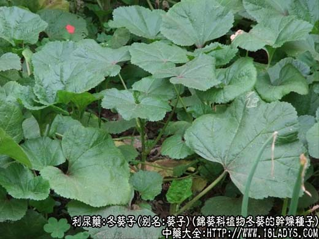
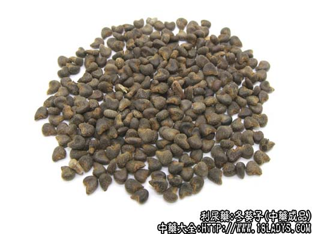
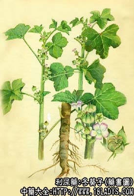

冬葵子为少常用中药。《神农本草经》列为上品。
别名：葵子、葵菜子、茼麻子。
来源：为锦葵科植物冬葵的干燥种子。冬葵根、冬葵叶亦供药用。多为野生。
产地：全国大部分地区均有生产。
性状鉴别：干燥和种子呈肾形，中央凹陷两端凸起。直径约1.5～3毫米。表面灰褐色，一端长而尖，另一端短而略圆。质坚。破开外壳内有黄白色种仁，富有油性。无臭，味淡微甘。
主要成分：种子含脂肪油及蛋白质。花含花青素类。鲜冬葵含单糖6.8%～7.4%，蔗糖4.1～4.6%，麦芽糖4.5%～4.8%，淀粉1.2%。
功效与作用：利尿、滑肠、下乳。
炮制：拣净杂质，生用。
性味：甘、寒。
归经：入大肠、小肠、膀胱经。
功能：利水、润肠、通乳。
主治：二便不通，淋病，水肿，妇女乳汁不行，乳房肿痛。
临床应用：冬葵子甘淡性寒质润，为滑利通窍之品，既可通利二便，又能下乳消肿，其通乳之功，与木通、通草相似。
1、用于治疗淋病，水肿等症，前者常与车前子，海金沙等配伍，后者可与茯苓配伍。
2、用于大便秘结，可与桃仁，郁李仁等配伍，具有通便润燥、滑肠软坚作用。
3、用于乳汁不通，乳房胀痛等症，常与穿山甲、王不留行、黄芪、猪蹄等配伍，具有活血通下乳作用。
使用注意：脾虚肠滑者忌服，孕妇慎服。
用量：6～15g，或入丸散。
处方举例：1、治血淋及虚劳尿血。《千金方》：冬葵子100g，水300g，取汁，日三服。
2、治难产、若生未得者。《食疗本草》：冬葵子200g，捣破，以水400毫升，煮取100g，去渣，顿服之。
3、治面上疱疮。陶弘景说道：冬葵子、柏子仁、茯苓、瓜瓣各30g，为末，食后酒服1g，日三服。
附一：冬葵根。
本品为少常用中药。始载于《名医别录》。
别名：葵根。
来源：同冬葵子。
性味：甘、辛、寒。
功能：清热解毒、利窍通淋。
主治：消渴、淋病，二便不利、乳汁少。
使用注意：脾阳不振者忌服。
用量：30～60g，外用：烧存性研末调服。
处方举例：治热淋、小肠不利，茎中急痛：《圣惠方》：车前子30g、冬葵根30g，水煎分服。
附二：冬葵叶。
别名：冬葵苗叶。
来源：同冬葵子。
主要成分：叶含粘液质。
性味：甘、寒。
功能：清热、行水、滑肠。
主治：肺热咳嗽，热毒下痢，黄疸。
使用注意：脾虚滑肠者忌服，孕妇禁用。
用量：30～60g，或捣汁服，外用：捣敷患处。
处方举例：1、治肺炎，冬葵叶煮稀饭服《重庆草红》。
2、治黄疸，冬葵全草60g、天胡荽90g、紫花地丁60g、车前子30g、精肉90g，水炖服，江西《草药手册》。
3、治咽喉肿痛，冬葵叶、花，阴干，煎水含漱，江西《草药手册》。